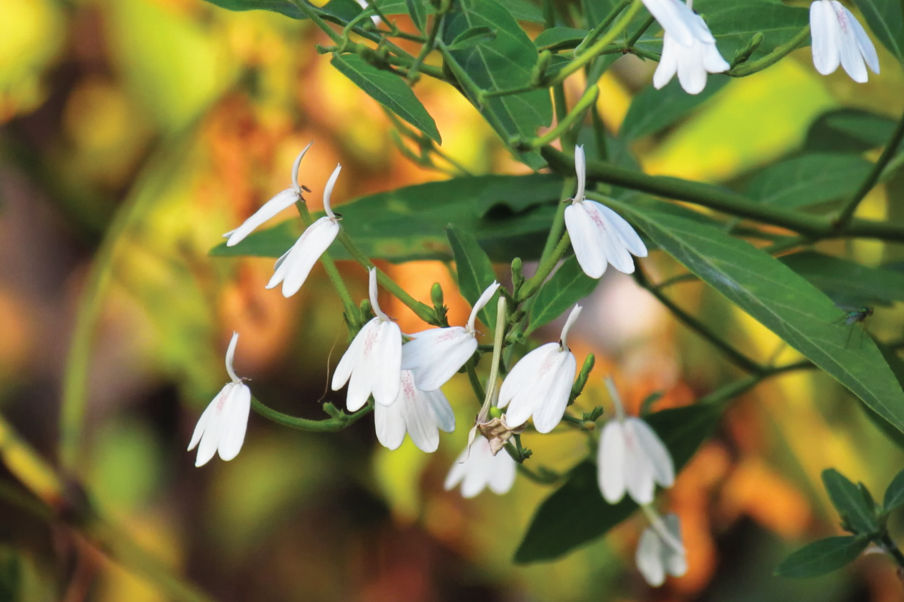

ทองพันชั่ง
ไม้พุ่ม ขนาดเล็ก สูงประมาณ 50 – 120 เซนติเมตร มักแตกหน่อและแผ่กิ่งก้านออกเป็นกอ ส่วนโคนของลำต้นเนื้อเป็นแกนแข็งลำต้นและกิ่งก้านมีขนประปรายทั่วไป บริเวณข้อ พองเล็กน้อย กิ่งอ่อนมักเป็นสันสี่เหลี่ยมตามยาว
ใบ เป็นใบเดี่ยว ออกเรียงตรงข้ามกันเป็นคู่ๆ ลักษณะใบรูปไข่หรือรูปรี โคนและปลายใบสอบเรียว ยาวประมาณ 4-6 เซนติเมตร และกว้างประมาณ 2-3 เซนติเมตร ขอบใบเรียบหรือเป็นคลื่นเล็กน้อย และแต่ละคู่ออกสลับทิศทางกัน เนื้อใบบางและเกลี้ยง แผ่นใบมีสีเขียวเป็นมัน
ดอก ออกดอกเป็นช่อสั้นๆ ตามซอกมุมใบ กลีบดอกมีสีขาว กลีบรองดอกมี 5 กลีบและมีขน กลีบดอกรวมกันเป็นหลอดรูปแจกันทรงสูง มีความยาวประมาณ 2 เซนติเมตร ปลายแยกเป็น 2 กลีบ กลีบมีขนยาวประมาณ 0.8 เซนติเมตรและกว้างประมาณ 0.1 เซนติเมตร ปลายแยกเป็น 2 แฉกแหลมสั้น ๆ ปลายกลีบล่างห้อยย้อยลง กว้างประมาณ 1.5 เซนติเมตร และหยักเป็นสามลอน กลีบบนชี้ตั้งขึ้นปลายแยกเป็นสองลอน ส่วนก้านเกสรจะสั้นติดอยู่ที่ปากท่อดอก เกสรเพศผู้สีน้ำตาลอ่อนยื่นพ้นปากหลอดออกมา ผล เป็นฝักที่มีขนสั้นๆ คลุม ภายในมี 4 เมล็ด พอแห้งแตกออกได้
ทองพันชั่งสามารถขยายพันธุ์ได้ด้วย การเพาะเมล็ดและนำกิ่งมาปักชำ วิธีการคือตัดกิ่งแก่ที่มีตาติดอยู่ 2-3 ตา แล้วปลิดใบทิ้งให้หมดจากนั้นตัดบริเวณกิ่งให้เฉียงทำมุม 45 องศา แล้วปักลงไปในดินที่ชุ่มน้ำโดยให้กิ่งเอียงเล็กน้อย ทองพันชั่งเป็นพืชที่ไม่ชอบร่มเงามาก (ต้องการที่ที่มีแสงแดดลอดผ่านมารำไร) มักชอบที่ดินปนทรายที่มีการระบายน้ำดี ไม่ขังแฉะ และต้องคอยดูแลการให้น้ำให้ดินชุ่มชื้น รวมถึงต้องคอยกำจัดวัชพืชอยู่เสมอ เพราะถ้าหากขาดน้ำหรือถูกแสงแดดมากจนเกินไปใบจะเป็นจุดเหลืองแล้วค่อยๆแห้งตาย ดังนั้นการปลูกจึงควรปลูกในฤดูฝน
ต้องการที่ที่มีแสงแดดลอดผ่านมารำไร มักชอบที่ดินปนทรายที่มีการระบายน้ำดี ไม่ขังแฉะ และต้องคอยดูแลการให้น้ำให้ดินชุ่มชื้น รวมถึงต้องคอยกำจัดวัชพืชอยู่เสมอ
ข้อควรระวัง ผู้ที่เป็นโรคโลหิตจาง โรคหัวใจ โรคหืด โรคความดันโลหิตต่ำ โรคมะเร็งในเม็ดเลือด ไม่ควรรับประทาน
สับเป็นท่อนๆ ประมาณ 2-3 นิ้ว แล้วล้างน้ำสะอาด นำไปตากแดกประมาณ 4-5 วัน จนแห้ง แล้วจึงนำไปเก็บรักษา